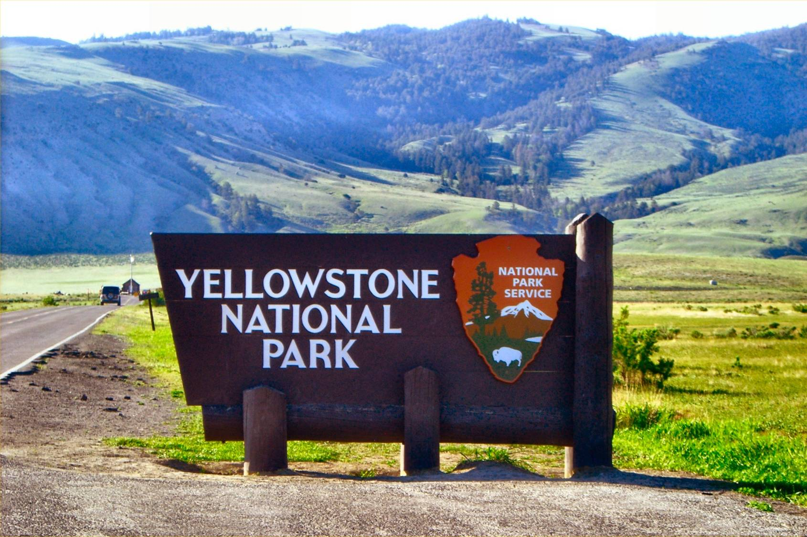

The Park
While growing up my family stopped by Yellowstone on vacation one time on our way to another location. I recently have wanted to go back to Yellowstone to explore the national park more. The fact that Yellowstone is home to a super Volcano that has the capcity to kill us all is a little concerning while enjoying nature. But, I figure I should probably go before the volcano erupts if I want to see the beauty of the landscape. I guess if it does erupt while I am there, I will consider it the " worst vacation ever ".

Animals
The animals at Yellowstone are amazing and scary all at the same time. People are familiar with the safety of a zoo, and so many peole get killed every year by wild animals in Yellowstone. I remember when my family was there, a bison was walking down the road with a stream of cars behind it as if it were leading a parade. As the bison got next to our car (we were going the opposite way on the two lane road) our dog saw the large animal and decided to bark at it. The bison stopped and looke over at our car... probably deciding if he should push us off the road for bringing a barking dog into his park. We lived, but I would not advise encouraging your family pet to take on large horned creaters while visiting the park.
Lodging
At Yellowstone National Park Lodges, you’re invited to discover or rediscover the magic of the world’s first national park, Yellowstone. As proud stewards of the park and this truly extraordinary American wonder, we’ll help you find your ultimate Yellowstone experience—all while working to protect and preserve the park for future generations. Yellowstone continues to provide inspiration for the people of the world and is a reflection of American values and ideals. From lodging, camping and dining to finding your way, things to do or applying for a job, find the information you need for planning a uniquely memorable visit to the extraordinary destination of Yellowstone National Park.
Old Faithful
Old Faithful is a cone geyser located in Yellowstone National Park in Wyoming, United States. It was named in 1870 during the Washburn-Langford-Doane Expedition and was the first geyser in the park to receive a name. It is a highly predictable geothermal feature, and has erupted every 44 to 125 minutes since 2000. The geyser and the nearby Old Faithful Inn are part of the Old Faithful Historic District.
Waterfalls
t 308 feet, the Lower Falls is the tallest waterfall in the park. In terms of height alone, it’s more than twice the size of Niagara Falls. The amount of water flowing over the falls varies greatly depending on the season. At peak runoff times in the spring, 63,500 gal/sec flow over the falls, whereas at lower runoff times in the fall, the flow diminishes to 5,000 gal/sec. You can see them up close by visiting the platform at the Brink of the Lower Falls. Other spots to catch a glimpse of the falls include Red Rock Point, Artist Point, Brink of the Lower Falls Trail, Uncle Tom's Trail, and at various points along the South Rim Trail.